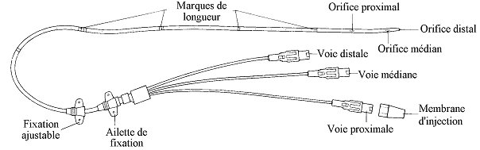

Bienvenue Sur Medical Education
Le catheter veineux central
Definition
Le catheterisme veineux central correspond a la mise en place dans le systeme veineux profond d’un catheter long.
L’extremite interne du catheter est placee dans une grosse veine (la veine cave) par voie sous-claviere le plus souvent, voire jugulaire ou femorale.

Cadre legislatif- Pose relevant d'un acte medical, rele infirmier de collaboration : art. R.4311-10 decret 2004-802 du 29/07/2004.
- Prelevements sanguins relevant du rele sur prescription medicale : art. R.4311-7 decret 2004-802 du 29/07/2004.
- Surveillance relevant du rele propre infirmier : art. R. 4311-5 decret 2004-802 du 29/07/2004.
- Obtenir un debit important dans l’administration de perfusion et une dilution plus rapide des substances injectees.
- Posseder une voie permettant eventuellement les prelevements sanguins.
- Voie d'abord veineuse peripherique inexploitable.
- Perfusion de solutes hypertoniques.
- Perfusion de drogues veinotoxiques.
- Nutrition parenterale prolongee.
- Necessite d’une mesure de la pression veineuse centrale.
Risques et complications
- Embolie gazeuse : surveiller l’etat neurologique, parametre vitaux.
- Pneumothorax : surveillance de la respiration.
- Thrombose sur catheter.
- Obstruction du catheter.
- Infection.
- Hematome.
- Ponction accidentelle de la carotide.
Surveillances et evaluations
- Surveiller l’integrite du catheter et des connexions.
- Installer le patient en decubitus dorsal, legerement en declive lors de la manipulation des voies du catheter, pour eviter le risque d'embolie gazeuse.
- Toujours hepariner la voie utilise lors de l'arret de l'utilisation de celle-ci (utiliser une heparine de rineage).
- Toujours verifier le reflux avant l'utilisation d'une voie.
- Surveiller les signes d’infection local (rougeur, ecoulement, gonflement) et generaux (hyperthermie, sueur, frissons).
Realisation du soin : le catheterisme veineux central
soinMateriel
- Kit de catheterisme veineux central :
- Catheter multi-lumiere : comporte 2 ou 3 voies d’administration distinctes. Les emergences des voies se font a des endroits differents sur le catheter :
- Voie distale : emergence la plus eloignee de l'extremite se trouvant dans la vene.
- Voie mediane : emergence se trouvant au milieu des deux autres.
- Voie proximale : emergence la plus proche de l’extremite interne.
- Aiguille.
- Guide metallique.
- Materiel pour la perfusion :
- Solute a perfuser en poche pour perfusion.
- Tubulure sterile.
- Rampe de robinets.
- Pied a perfusion.
- Materiel pour la realisation du soin :
- Champ sterile fenestre.
- Champ de table sterile.
- Compresses steriles.
- Poche de serum physiologique isotonique 50 mL (permet de purger les lumieres du catheter).
- Seringue de 10 mL.
- Aiguille pompeuse (rose : 18 Gauge).
- Bistouri.
- Fils de suture.
- Produits pour l’antisepsie :
- Respecter les memes gammes de produit : polyvidone iodee ou chlorexidine.
- Savon antiseptique.
- Serum physiologique ou eau sterile.
- Antiseptique dermique.
- Materiel pour l'habillage :
- Tenue sterile du medecin operateur :
- Casaque sterile.
- Bavette.
- Gants steriles.
- Charlotte.
- Tenue du soignant :
- Bavette.
- Charlotte.
- Gants steriles.
- Tablier a usage unique.
- Tenue du patient :
- Bavette.
- Charlotte.
- Materiel d’anesthesie local :
- Anesthesique local : lidocaene 1% (Xylocaenee)
- Seringue de 10 mL.
- Aiguille pompeuse (rose : 18 Gauge).
- Aiguille sous-cutanee (orange : 25 Gauge).
- Materiel pour realisation d’un pansement :
- Compresses steriles.
- Pansement sterile.
- Pansement occlusif sterile transparent (Opsitee, Tegaderme).
- Materiel divers :
- Tondeuse.
- Sac a elimination des dechets.
- Container a dechets contamines tranchants.
- Desinfectant de surface et chiffonnette.
- Necessaire a l'hygiene des mains.
Realisation du soin
Installation
- Prevenir le patient, lui expliquer le principe du soin et son utilite.
- S’habiller (tablier, bavette, charlotte).
- Effectuer un lavage simple des mains ou effectuer un traitement hygienique des mains par frictions avec une solution hydro-alcoolique : hygiene des mains.
- Installer le materiel apres verification des dates de peremptions et de l'integrite des emballages.
- Installation sur une surface propre et desinfectee au prealable.
- Installer les poubelles de tri des dechets au pied du lit du patient.
- Respecter le triangle d'hygiene, de securite et d'ergonomie : Propre (materiel) – Patient – Sale (poubelles).
- Ouvrir aseptiquement les paquets de compresses et les imbiber avec le savon antiseptique (mettre un peu de serum ou eau sur le savon antiseptique afin de le diluer), le serum physiologique, l’antiseptique dermique, laisser un paquet de compresses seches.
- Preparer la perfusion, purger la tubulure et la rampe de robinet.
- Installer le patient en decubitus dorsal, en trendelenburg 10e (legerement en declive), bras le long du corps, mettre un bilot au niveau de la colonne vertebrale. Mettre une bavette et une charlotte au patient et lui tourner la tete du cete oppose de la zone de ponction.
- Si besoin, depiler la zone a perfuser avec une tondeuse ou aux ciseaux, ne pas raser.
- La depilation doit toujours etre realisee dans le sens du poils pour eviter les folliculites.
- Effectuer un lavage antiseptique des mains ou effectuer un traitement hygienique des mains par frictions avec une solution hydro-alcoolique : hygiene des mains.
- Mettre les gants steriles.
- Pratiquer une premiere desinfection de la zone de ponction en 4 temps :
- Aller de l'exterieur vers l'interieur = faire un cete, l'autre cete et terminer par le milieu (site de ponction).
- Ne jamais repasser a un meme endroit.
- Utiliser une compresse par passage puis la jeter dans le sac a dechets contamines.
- Respecter le temps de contact de l'antiseptique.
- Nettoyer avec le savon antiseptique.
- Rincer avec le serum physiologique ou l'eau sterile.
- Secher avec des compresses steriles seches.
- Appliquer l'antiseptique dermique.
- Effectuer un lavage antiseptique des mains ou effectuer un traitement hygienique des mains par frictions avec une solution hydro-alcoolique : hygiene des mains.
- Aider le medecin a l’habillage sterile.
- Servir le medecin sterilement :
- Repere de du point de ponction.
- Seconde desinfection avec antiseptique dermique.
- Anesthesie locale.
- Purge des lumieres et des robinets avec le serum physiologique isotonique.
- Ponction de la veine.
- Introduction du guide.
- Mise en place du catheter a travers le guide.
- Retrait du guide.
- Verification d'un reflux en aspirant le sang, ce qui permet en meme temps de purger le catheter.
- Fixation du catheter a la peau : suture.
- Troisieme antisepsie avec l'antiseptique dermique.
- Realisation du pansement : pansement sterile recouvert d'un pansement occlusif transparent.
- Reinstaller le patient.
- Eliminer les dechets contamines et desinfecter le materiel utilise ainsi que le plan de travail.
- Effectuer un lavage simple des mains ou effectuer un traitement hygienique des mains par frictions avec une solution hydro-alcoolique : hygiene des mains.
- Transmission : date de pose, veine de ponction (sous-claviere, femorale, jugulaire externe), reaction du patient.
Realisation du soin : le prelevement sanguin sur un catheter veineux central
du soinMateriel
- Compresses steriles.
- Antiseptique (meme famille que l'antiseptique utilise pour la pose du catheter : polyvidone iodee ou chlorexidine).
- Bouchon sterile pour site d'injection (robinet).
- 2 seringues steriles de 10 mL.
- 20 mL de serum physiologique isotonique.
- Aiguille pompeuse (rose : 18 Gauge).
- Systeme de prelevement :
- Corps de pompe a usage unique (vacutainer).
- Adaptateur sterile a usage unique pour corps de pompe.
- Ou seringue sterile.
- Tube(s) de prelevement sous vide pour analyses (prevoir 2 tubes secs supplementaire pour purger la ligne).
- Etiquettes laboratoire d'identification patient.
- Bons d'analyses laboratoire, avec pochette de transport.
- Bavette, charlotte.
- Gants non sterile a usage unique.
- Sac a elimination des dechets.
- Conteneur a dechets contamines piquants et tranchants.
- Desinfectant de surface et chiffonnette.
- Necessaire a l'hygiene des mains.
Realisation du soin
La manipulation de la ligne de perfusion, du robinet ou d'une rampe de perfusion se fait toujours avec des compresses steriles imbibees d’antiseptique puisque les antiseptiques diminuent la colonisation des embases du catheter : une dessous pour tenir le dispositif, une autre pour tourner le robinet et manipuler les bouchons.1
1Recommandations pour la pratique clinique “Prevention des infections liees aux catheters veineux peripheriques”, SFHH – HAS, novembre 2005. (R 36)
La manipulation de la ligne de perfusion, du robinet ou d'une rampe de perfusion se fait toujours apres un lavage antiseptique des mains.2
2(article 86, 100 recommandations pour la surveillance et la prevention des infections nosocomiales, Ministere de l'Emploi et de la Solidarite. Secretariat d'Etat a la Sante et a l'action sociale Comite Technique des Infections Nosocomiales - 2eme edition, 1999)
- Verifier la prescription medicale.
- Prevenir le patient.
- S’habiller (bavette, charlotte).
- Effectuer un lavage simple des mains ou effectuer un traitement hygienique des mains par frictions avec une solution hydro-alcoolique : hygiene des mains.
- Installer le materiel apres verification des dates de peremptions et de l'integrite des emballages.
- Installation sur une surface propre et desinfectee au prealable.
- Installer les poubelles de tri des dechets au pied du lit du patient.
- Respecter le triangle d'hygiene, de securite et d'ergonomie : Propre (materiel) – Patient – Sale (poubelles).
- Ouvrir aseptiquement le paquet de compresses steriles et les imbiber avec l’antiseptique.
- Preparer les deux seringues de 10 mL de serum physiologique pour verifier le reflux et effectuer le rineage.
- Assembler l'adaptateur et le corps de pompe.
- Installer le patient en decubitus dorsal, legerement en declive.
- Effectuer un lavage antiseptique des mains ou effectuer un traitement hygienique des mains par frictions avec une solution hydro-alcoolique : hygiene des mains.
- Mettre les gants.
- Manipuler le robinet de la voie e prelever avec des compresses steriles imbibees d’antiseptique.
- Manipuler le robinet de la voie d'injection avec des compresses steriles imbibees d’antiseptique.
- Fermer la voie, enlever le bouchon et adapter une seringue de 10 mL de serum physiologique.
- Ouvrir la voie et aspirer pour verifier le reflux sanguin, puis rincer.
- Fermer la voie.
- Adapter le corps de pompe.
- Ouvrir la voie.
- Purger la ligne avec les tubes de purges, les jeter.
- Prelever les tubes d'analyses selon un ordre precis (critere de bon prelevement) : voir la fiche Ordre de prelevement des tubes d'analyses biologiques.
- Fermer la voie, enlever et eliminer le corps de pompe.
- Adapter la seringue de serum physiologique au robinet, ouvrir la voie et rincer la ligne.
- Fermer la voie, desadapter et jeter la seringue, visser un nouveau bouchon sterile.
- Reinstaller le patient.
- Eliminer les dechets contamines et desinfecter le materiel utilise ainsi que le plan de travail.
- Effectuer un lavage simple des mains ou effectuer un traitement hygienique des mains par frictions avec une solution hydro-alcoolique : hygiene des mains.
- Verifier la concordance des etiquettes et de l'identite du patient puis etiqueter les tubes d'analyses, remplir les bons d'analyse et acheminer les tubes au laboratoire d'analyse.
Realisation du soin : l'injection sur catheter veineux central
soinMateriel
- Produit a injecter.
- Presentation du produit :
- Seringue sterile de 1 mL a 20 mL en fonction de la quantite du produit a injecter.
- Poche pour perfusion avec tubulure.
- Bouchon sterile pour site d'injection (robinet).
- Compresses steriles.
- Antiseptique (meme famille que l'antiseptique utilise pour la pose du catheter : polyvidone iodee ou chlorexidine).
- 2 seringues steriles de 10 mL.
- 20 mL de serum physiologique isotonique.
- Aiguille pompeuse (rose : 18 Gauge).
- Bavette, charlotte.
- Sac a elimination des dechets.
- Conteneur a dechets contamines piquants et tranchants.
- Desinfectant de surface et chiffonnette.
- Necessaire a l'hygiene des mains.
Realisation du soin
La manipulation de la ligne de perfusion, du robinet ou d'une rampe de perfusion se fait toujours avec des compresses steriles imbibees d’antiseptique puisque les antiseptiques diminuent la colonisation des embases du catheter : une dessous pour tenir le dispositif, une autre pour tourner le robinet et manipuler les bouchons.1
1Recommandations pour la pratique clinique “Prevention des infections liees aux catheters veineux peripheriques”, SFHH – HAS, novembre 2005. (R 36)
La manipulation de la ligne de perfusion, du robinet ou d'une rampe de perfusion se fait toujours apres un lavage antiseptique des mains.2
2(article 86, 100 recommandations pour la surveillance et la prevention des infections nosocomiales, Ministere de l'Emploi et de la Solidarite. Secretariat d'Etat a la Sante et a l'action sociale Comite Technique des Infections Nosocomiales - 2eme edition, 1999)
- Verifier la prescription medicale.
- Prevenir le patient.
- S’habiller (bavette, charlotte).
- Effectuer un lavage simple des mains ou effectuer un traitement hygienique des mains par frictions avec une solution hydro-alcoolique : hygiene des mains.
- Installer le materiel apres verification des dates de peremptions et de l'integrite des emballages.
- Installation sur une surface propre et desinfectee au prealable.
- Installer les poubelles de tri des dechets au pied du lit du patient.
- Respecter le triangle d'hygiene, de securite et d'ergonomie : Propre (materiel) – Patient – Sale (poubelles).
- Ouvrir aseptiquement le paquet de compresses steriles et les imbiber avec l’antiseptique.
- Preparer les deux seringues de 10 mL de serum physiologique pour verifier le reflux et rincer la ligne.
- Verifier la compatibilite du traitement e injecter et le traitement en cours d'administration par la perfusion.
- Preparer en respectant les regles de preparation, le produit a injecter dans une poche pour perfusion ou dans une seringue.
- Installer le patient en decubitus dorsal, legerement en declive.
- Effectuer un lavage antiseptique des mains ou effectuer un traitement hygienique des mains par frictions avec une solution hydro-alcoolique : hygiene des mains.
- Manipuler le robinet de la voie d'injection avec des compresses steriles imbibees d’antiseptique.
- Fermer la voie, enlever le bouchon et adapter une seringue de 10 mL de serum physiologique.
- Ouvrir la voie et aspirer pour verifier le reflux sanguin, puis rincer.
- Fermer la voie et desadapter la seringue.
- Adapter la tubulure de la perfusion ou la seringue.
- Ouvrir la voie et regler le debit ou injecter.
- A la fin de l'administration du produit :
- Fermer la voie et eter le moyen d'administration.
- Adapter la seringue de serum physiologique au robinet, ouvrir la voie et rincer la ligne.
- Fermer la voie, desadapter et jeter la seringue, visser un nouveau bouchon sterile.
- Reinstaller le patient.
- Eliminer les dechets contamines et desinfecter le materiel utilise ainsi que le plan de travail.
- Effectuer un lavage simple des mains ou effectuer un traitement hygienique des mains par frictions avec une solution hydro-alcoolique : hygiene des mains.
Realisation du soin : l'ablation d'un catheter veineux central
Materiel
- Bistouri sterile a usage unique ou lame sterile a usage unique.
- Pince sterile.
- Ciseaux steriles.
- Compresses steriles.
- Produits pour l’antisepsie :
- Respecter les memes gammes de produit : polyvidone iodee ou chlorexidine.
- Savon antiseptique.
- Serum physiologique ou eau sterile.
- Antiseptique dermique.
- Pansement.
- Flacon bacteriologique sterile.
- Etiquettes laboratoire d'identification patient.
- Bons d'analyses laboratoire, avec pochette de transport.
- Bavette, charlotte.
- Gants non sterile a usage unique.
- Gants sterile.
- Sac a elimination des dechets.
- Conteneur a dechets contamines piquants et tranchants.
- Desinfectant de surface et chiffonnette.
- Necessaire a l'hygiene des mains.
Realisation du soin
- Prevenir le patient, lui expliquer le principe du soin et son utilite.
- S’habiller (tablier, bavette, charlotte).
- Effectuer un lavage simple des mains ou effectuer un traitement hygienique des mains par frictions avec une solution hydro-alcoolique : hygiene des mains.
- Installer le materiel apres verification des dates de peremptions et de l'integrite des emballages.
- Installation sur une surface propre et desinfectee au prealable.
- Installer les poubelles de tri des dechets au pied du lit du patient.
- Respecter le triangle d'hygiene, de securite et d'ergonomie : Propre (materiel) – Patient – Sale (poubelles).
- Ouvrir aseptiquement les paquets de compresses et les imbiber avec le savon antiseptique (mettre un peu de serum ou eau sur le savon antiseptique afin de le diluer), le serum physiologique, l’antiseptique dermique, laisser un paquet de compresses seches.
- Installer le patient en decubitus dorsal, legerement en declive.
- Mettre les gants a usage unique.
- Oter le pansement et l’eliminer dans les dechets contamines ; eter les gants et les jeter.
- Observer l’aspect du point de ponction, reperer les fils fixant le catheter a la peau.
- Effectuer un lavage antiseptique des mains ou effectuer un traitement hygienique des mains par frictions avec une solution hydro-alcoolique : hygiene des mains.
- Mettre les gants steriles.
- Pratiquer une premiere desinfection de la zone de ponction en 4 temps :
- Ne jamais repasser a un meme endroit.
- Utiliser une compresse par passage puis la jeter dans le sac a dechets contamines.
- Respecter le temps de contact de l'antiseptique.
- Nettoyer avec le savon antiseptique.
- Rincer avec le serum physiologique ou l'eau sterile.
- Secher avec des compresses steriles seches.
- Appliquer l'antiseptique dermique.
Le
fil exterieur est considere comme etant septique. De ce fait, il ne
doit pas passer par l'interieur des tissus consideres comme aseptique.
Mais
il arrive qu'une suture incluse dans la peau ne permette pas ce
principe. Il est donc important d'eter les fils apres une antisepsie de
la cicatrice.
- Saisir le nœud du premier fil a l'aide de la pince sterile et tirer legerement pour soulever et decoller le fil de la peau.
- Couper le fil a ras de la peau et tirer doucement.
- Deposer au fur et a mesure les fils sur une compresse seche et verifier l'integralite des fils.
- Poser un matelas de compresses en haut du point de ponction.
- Maintenir de l’autre main le catheter avec une compresse sterile, de faeon a ne pas se desteriliser.
- Retirer le catheter sans appuyer sur l’orifice avec le matelas de compresses car cela risque de fausser les resultats de bacteriologie si les germes se fixent sur les compresses.
- Couper l’extremite du catheter et le mettre dans le flacon de bacteriologie.
- Pratiquer une seconde antisepsie de la peau avec l’antiseptique dermique.
- Mettre un pansement pour eviter une infection et l’ecoulement.
- Reinstaller le patient.
- Eliminer les dechets contamines et desinfecter le materiel utilise ainsi que le plan de travail.
- Effectuer un lavage simple des mains ou effectuer un traitement hygienique des mains par frictions avec une solution hydro-alcoolique : hygiene des mains.
- Verifier la concordance des etiquettes et de l'identite du patient puis etiqueter le flacon, remplir les bons d'analyse et acheminer le flacon au laboratoire d'analyse.